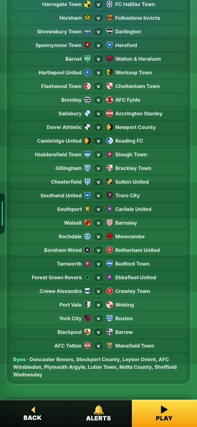
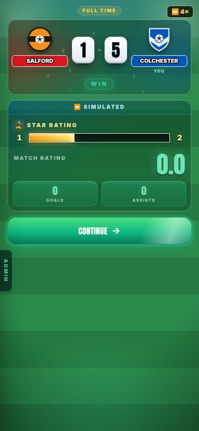
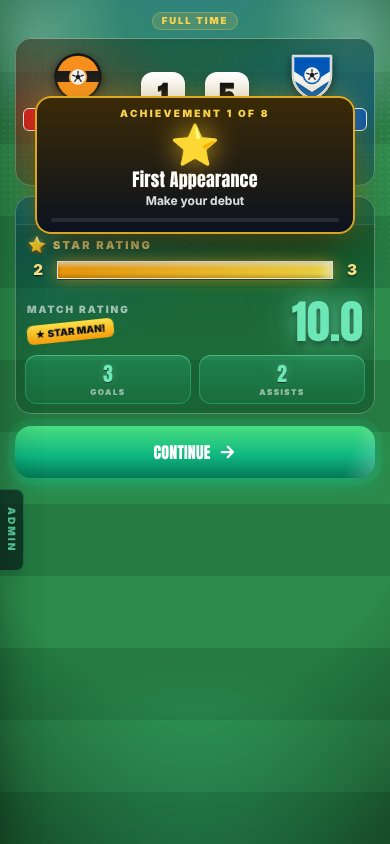
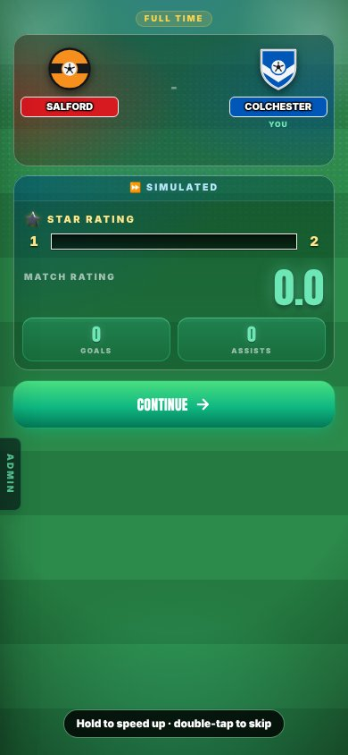

B9 · LOWER LEAGUE TROPHY
A new cup for 120 lower-league clubs, and a way to speed up or skip the screens after a match.
On the Harry branch, not live yet.
Overnight round, 20 Oct 2026. In Admin → Patch notes this is v0.73.
CHECK THESE
ADDED
The report gives no Problem or Why for these three. Each card shows the Fix.
Not in the report.
- 120 clubs: League One, League Two, National League, North and South (this season’s ladder).
- A 128-slot draw. 8 byes go to last season’s League One top 8.
- 7 rounds, 119 matches, played on Wednesdays (weekends 4, 8, 16, 21, 25, 29, 34).
- Before the quarter-finals: penalties straight after a draw. From the quarter-finals: extra time, then penalties.
Matches per round. Worked out from the report’s numbers (120 clubs, 8 byes, 119 matches). The report does not list matches per round.


Tested over 200 seasons: 200 of 200 had a winner and exactly 119 matches. No date clashes with the league or the FA Cup.
Not in the report.
A trophy in the cabinet. 30,000 XP (the League Cup pays 108,000). Fame +2. A small transfer-interest boost from those leagues: +0.05 for a semi-final, +0.1 for a win. A cash prize of 2 weeks’ wage too. Harry kept it on 20 Oct (“pretty cool”). No cup paid cash before.
Not in the report.
After a match, hold anywhere: the screen runs at 4×. Double-tap: it skips to the end of that screen. Crediting is unchanged. A hint shows the first 3 times.
How long the star bar takes. Measured.


Look for: the ⏩ 4× chip while a finger is held and the star bar filling faster, then a double-tap jumping to the end of the screen. The clip is 6 seconds long, on a phone-size screen. A team sheet “⏩” sim was used, so the match is simulated.
More pictures (1): the hint

KNOWN ISSUES
Below the Championship, the FA Cup Round of 64 lands the day after a league game.
Not in the report.
Fixed in B13 (Fixtures + Admin Fixes, v0.78). A new checker played 5 seasons in every division and found 170 clashes, this one among them. Now 0.
THE NUMBERS
The numbers, if you want them
Lower League Trophy. 120 clubs + 8 byes = 128 slots. 7 rounds. 119 matches.
200 seasons tested: 200 of 200 had a winner and exactly 119 matches. No date clashes with the league or the FA Cup.
Time the star bar takes after a match. Normal ~3.4 s. Held ~1.1 s. Double-tap ~0.6 s.
VIDEOS
Hold to speed up, then double-tap to skip, on a post-match screen. 6 seconds, on a phone-size screen. It is under “Hold to speed up. Double-tap to skip.” above.
SEEN / NOT SEEN
Seen on a screen
- The Round 1 draw and the 8 byes
- The hint, the ⏩ 4× chip, and the screen after a double-tap
- A 6-second clip of hold, then double-tap, on a phone-size screen (filmed 20 Oct on the built Harry branch)
Measured (numbers)
- 200 seasons: 200 of 200 with a winner and exactly 119 matches; no date clashes
- Star bar: ~3.4 s normal, ~1.1 s held, ~0.6 s double-tap
Not seen / not done
- The prize on a screen (cabinet trophy, XP, fame): the report gives no still
- The later rounds of the cup on a screen
- Whether the cash prize is switched on in the code now: you kept it, but the report does not say it is built